Benchmarks for mixture¶
DPGMM-blobs-fit_unsup¶
Benchmark setup
from sklearn.mixture import DPGMM
from deps import load_data
kwargs = {'n_components': 10, 'covariance_type': 'full'}
X, y, X_t, y_t = load_data('blobs')
obj = DPGMM(**kwargs)
Benchmark statement
obj.fit(X)
Execution time
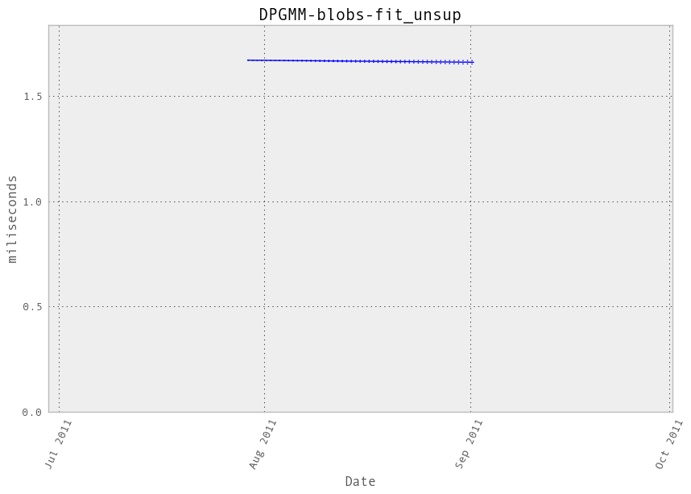Memory usage
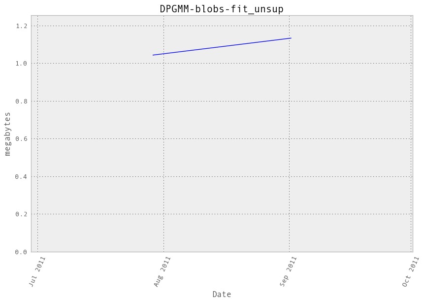Additional output
cProfile
37539 function calls in 1.760 seconds
Ordered by: cumulative time
ncalls tottime percall cumtime percall filename:lineno(function)
1 0.000 0.000 1.760 1.760 /hardmnt/goblin1/home/nivlad/balls/vbench/vbench/benchmark.py:257(f)
1 0.000 0.000 1.760 1.760 <f>:1(<module>)
1 0.001 0.001 1.760 1.760 /hardmnt/goblin1/home/nivlad/balls/scikit-learn/sklearn/mixture/dpgmm.py:472(fit)
10 0.000 0.000 1.325 0.132 /hardmnt/goblin1/home/nivlad/balls/scikit-learn/sklearn/mixture/dpgmm.py:372(_do_mstep)
200 0.844 0.004 0.908 0.005 /home/nivlad/.local/lib/python2.7/site-packages/scipy/linalg/basic.py:365(lstsq)
10 0.037 0.004 0.808 0.081 /hardmnt/goblin1/home/nivlad/balls/scikit-learn/sklearn/mixture/dpgmm.py:303(_update_precisions)
10 0.020 0.002 0.515 0.052 /hardmnt/goblin1/home/nivlad/balls/scikit-learn/sklearn/mixture/dpgmm.py:284(_update_means)
100 0.002 0.000 0.441 0.004 /home/nivlad/.local/lib/python2.7/site-packages/scipy/linalg/basic.py:457(pinv)
320 0.299 0.001 0.299 0.001 {numpy.core.multiarray.dot}
10 0.002 0.000 0.214 0.021 /hardmnt/goblin1/home/nivlad/balls/scikit-learn/sklearn/mixture/dpgmm.py:224(eval)
10 0.004 0.000 0.187 0.019 /hardmnt/goblin1/home/nivlad/balls/scikit-learn/sklearn/mixture/dpgmm.py:92(_bound_state_log_lik)
100 0.002 0.000 0.183 0.002 /hardmnt/goblin1/home/nivlad/balls/scikit-learn/sklearn/mixture/dpgmm.py:86(_sym_quad_form)
100 0.006 0.000 0.180 0.002 /home/nivlad/.local/lib/python2.7/site-packages/scipy/spatial/distance.py:1693(cdist)
1 0.000 0.000 0.159 0.159 /hardmnt/goblin1/home/nivlad/balls/scikit-learn/sklearn/cluster/k_means_.py:738(fit)
1 0.000 0.000 0.159 0.159 /hardmnt/goblin1/home/nivlad/balls/scikit-learn/sklearn/cluster/k_means_.py:151(k_means)
100 0.158 0.002 0.158 0.002 {scipy.spatial._distance_wrap.cdist_mahalanobis_wrap}
10 0.001 0.000 0.157 0.016 /hardmnt/goblin1/home/nivlad/balls/scikit-learn/sklearn/cluster/k_means_.py:303(_kmeans_single)
10 0.000 0.000 0.096 0.010 /hardmnt/goblin1/home/nivlad/balls/scikit-learn/sklearn/cluster/k_means_.py:525(_init_centroids)
10 0.013 0.001 0.095 0.010 /hardmnt/goblin1/home/nivlad/balls/scikit-learn/sklearn/cluster/k_means_.py:36(_k_init)
120 0.013 0.000 0.095 0.001 /hardmnt/goblin1/home/nivlad/balls/scikit-learn/sklearn/metrics/pairwise.py:101(euclidean_distances)
600 0.044 0.000 0.068 0.000 /home/nivlad/.local/lib/python2.7/site-packages/numpy/lib/function_base.py:526(asarray_chkfinite)
10 0.000 0.000 0.060 0.006 /hardmnt/goblin1/home/nivlad/balls/scikit-learn/sklearn/mixture/dpgmm.py:450(_logprior)
10 0.001 0.000 0.047 0.005 /hardmnt/goblin1/home/nivlad/balls/scikit-learn/sklearn/mixture/dpgmm.py:414(_bound_precisions)
100 0.003 0.000 0.046 0.000 /hardmnt/goblin1/home/nivlad/balls/scikit-learn/sklearn/mixture/dpgmm.py:68(_bound_wishart)
200 0.002 0.000 0.042 0.000 {map}
120 0.002 0.000 0.039 0.000 /hardmnt/goblin1/home/nivlad/balls/scikit-learn/sklearn/metrics/pairwise.py:52(check_pairwise_arrays)
100 0.018 0.000 0.036 0.000 /home/nivlad/.local/lib/python2.7/site-packages/scipy/linalg/basic.py:336(det)
20 0.023 0.001 0.031 0.002 /hardmnt/goblin1/home/nivlad/balls/scikit-learn/sklearn/cluster/k_means_.py:478(_centers)
361 0.002 0.000 0.031 0.000 /hardmnt/goblin1/home/nivlad/balls/scikit-learn/sklearn/utils/validation.py:67(atleast2d_or_csr)
1972 0.031 0.000 0.031 0.000 {method 'sum' of 'numpy.ndarray' objects}
200 0.016 0.000 0.029 0.000 /hardmnt/goblin1/home/nivlad/balls/scikit-learn/sklearn/mixture/dpgmm.py:58(wishart_logz)
120 0.002 0.000 0.029 0.000 /hardmnt/goblin1/home/nivlad/balls/scikit-learn/sklearn/utils/extmath.py:70(safe_sparse_dot)
20 0.000 0.000 0.028 0.001 /hardmnt/goblin1/home/nivlad/balls/scikit-learn/sklearn/cluster/k_means_.py:431(_labels_inertia)
20 0.006 0.000 0.027 0.001 /hardmnt/goblin1/home/nivlad/balls/scikit-learn/sklearn/cluster/k_means_.py:414(_labels_inertia_precompute_dense)
210 0.010 0.000 0.023 0.000 /hardmnt/goblin1/home/nivlad/balls/scikit-learn/sklearn/mixture/dpgmm.py:48(wishart_log_det)
1400 0.021 0.000 0.021 0.000 {method 'any' of 'numpy.ndarray' objects}
10 0.009 0.001 0.021 0.002 /hardmnt/goblin1/home/nivlad/balls/scikit-learn/sklearn/mixture/dpgmm.py:36(log_normalize)
1116 0.003 0.000 0.021 0.000 /home/nivlad/.local/lib/python2.7/site-packages/scipy/sparse/base.py:553(isspmatrix)
970 0.005 0.000 0.021 0.000 /home/nivlad/.local/lib/python2.7/site-packages/numpy/core/fromnumeric.py:1379(sum)
601 0.007 0.000 0.020 0.000 /hardmnt/goblin1/home/nivlad/balls/scikit-learn/sklearn/utils/validation.py:10(assert_all_finite)
1932 0.006 0.000 0.018 0.000 /home/nivlad/.local/lib/python2.7/site-packages/numpy/core/numeric.py:167(asarray)
1116 0.012 0.000 0.018 0.000 /home/nivlad/.local/lib/python2.7/site-packages/scipy/sparse/sputils.py:116(_isinstance)
240 0.002 0.000 0.016 0.000 /hardmnt/goblin1/home/nivlad/balls/scikit-learn/sklearn/utils/validation.py:23(safe_asarray)
200 0.004 0.000 0.014 0.000 /home/nivlad/.local/lib/python2.7/site-packages/scipy/linalg/lapack.py:60(get_lapack_funcs)
430 0.010 0.000 0.014 0.000 /hardmnt/goblin1/home/nivlad/balls/scikit-learn/sklearn/mixture/dpgmm.py:28(digamma)
2294 0.013 0.000 0.013 0.000 {numpy.core.multiarray.array}
361 0.002 0.000 0.011 0.000 /hardmnt/goblin1/home/nivlad/balls/scikit-learn/sklearn/utils/validation.py:62(array2d)
240 0.008 0.000 0.010 0.000 /hardmnt/goblin1/home/nivlad/balls/scikit-learn/sklearn/mixture/dpgmm.py:32(gammaln)
300 0.001 0.000 0.010 0.000 /home/nivlad/.local/lib/python2.7/site-packages/scipy/spatial/distance.py:132(_copy_arrays_if_base_present)
10 0.009 0.001 0.010 0.001 /hardmnt/goblin1/home/nivlad/balls/scikit-learn/sklearn/utils/extmath.py:210(logsumexp)
300 0.001 0.000 0.009 0.000 /home/nivlad/.local/lib/python2.7/site-packages/scipy/spatial/distance.py:120(_copy_array_if_base_present)
200 0.004 0.000 0.009 0.000 /home/nivlad/.local/lib/python2.7/site-packages/scipy/linalg/lapack.py:45(find_best_lapack_type)
420 0.005 0.000 0.009 0.000 /home/nivlad/.local/lib/python2.7/site-packages/numpy/core/numeric.py:1830(identity)
300 0.002 0.000 0.008 0.000 /home/nivlad/.local/lib/python2.7/site-packages/numpy/core/numerictypes.py:703(issubsctype)
210 0.001 0.000 0.007 0.000 /home/nivlad/.local/lib/python2.7/site-packages/numpy/core/fromnumeric.py:986(trace)
361 0.004 0.000 0.007 0.000 /home/nivlad/.local/lib/python2.7/site-packages/numpy/core/shape_base.py:58(atleast_2d)
690 0.003 0.000 0.006 0.000 /home/nivlad/.local/lib/python2.7/site-packages/numpy/core/getlimits.py:91(__new__)
600 0.004 0.000 0.006 0.000 /home/nivlad/.local/lib/python2.7/site-packages/numpy/core/numerictypes.py:608(obj2sctype)
10 0.002 0.000 0.006 0.001 /hardmnt/goblin1/home/nivlad/balls/scikit-learn/sklearn/mixture/dpgmm.py:390(_bound_concentration)
202 0.006 0.000 0.006 0.000 {method 'mean' of 'numpy.ndarray' objects}
10 0.003 0.000 0.006 0.001 /hardmnt/goblin1/home/nivlad/balls/scikit-learn/sklearn/mixture/dpgmm.py:437(_bound_proportions)
3162 0.005 0.000 0.005 0.000 {isinstance}
210 0.005 0.000 0.005 0.000 {method 'trace' of 'numpy.ndarray' objects}
2632 0.005 0.000 0.005 0.000 {method 'split' of 'str' objects}
551 0.004 0.000 0.004 0.000 {numpy.core.multiarray.zeros}
100 0.002 0.000 0.003 0.000 /home/nivlad/.local/lib/python2.7/site-packages/scipy/linalg/flinalg.py:24(get_flinalg_funcs)
1700 0.003 0.000 0.003 0.000 {issubclass}
710 0.003 0.000 0.003 0.000 {method 'get' of 'dict' objects}
400 0.002 0.000 0.003 0.000 /home/nivlad/.local/lib/python2.7/site-packages/scipy/linalg/lapack.py:23(cast_to_lapack_prefix)
200 0.001 0.000 0.002 0.000 /home/nivlad/.local/lib/python2.7/site-packages/numpy/core/fromnumeric.py:1508(any)
361 0.001 0.000 0.002 0.000 /home/nivlad/.local/lib/python2.7/site-packages/numpy/core/numeric.py:237(asanyarray)
410 0.002 0.000 0.002 0.000 {numpy.core.multiarray.arange}
200 0.002 0.000 0.002 0.000 {method 'astype' of 'numpy.generic' objects}
100 0.002 0.000 0.002 0.000 {method 'cumsum' of 'numpy.ndarray' objects}
2324 0.002 0.000 0.002 0.000 {len}
500 0.001 0.000 0.001 0.000 /home/nivlad/.local/lib/python2.7/site-packages/scipy/spatial/distance.py:151(_convert_to_double)
20 0.001 0.000 0.001 0.000 {method 'max' of 'numpy.ndarray' objects}
1181 0.001 0.000 0.001 0.000 {method 'append' of 'list' objects}
10 0.001 0.000 0.001 0.000 /hardmnt/goblin1/home/nivlad/balls/scikit-learn/sklearn/mixture/dpgmm.py:275(_update_concentration)
10 0.000 0.000 0.001 0.000 /hardmnt/goblin1/home/nivlad/balls/scikit-learn/sklearn/mixture/dpgmm.py:407(_bound_means)
202 0.001 0.000 0.001 0.000 {method 'reshape' of 'numpy.ndarray' objects}
10 0.000 0.000 0.001 0.000 /hardmnt/goblin1/home/nivlad/balls/scikit-learn/sklearn/mixture/dpgmm.py:24(sqnorm)
10 0.000 0.000 0.001 0.000 /hardmnt/goblin1/home/nivlad/balls/scikit-learn/sklearn/utils/extmath.py:15(norm)
361 0.001 0.000 0.001 0.000 {range}
410 0.001 0.000 0.001 0.000 {getattr}
300 0.001 0.000 0.001 0.000 {method 'sort' of 'list' objects}
90 0.000 0.000 0.001 0.000 /home/nivlad/.local/lib/python2.7/site-packages/numpy/core/fromnumeric.py:757(searchsorted)
90 0.001 0.000 0.001 0.000 {method 'random_sample' of 'mtrand.RandomState' objects}
10 0.000 0.000 0.001 0.000 /home/nivlad/.local/lib/python2.7/site-packages/numpy/core/fromnumeric.py:1643(cumsum)
104 0.001 0.000 0.001 0.000 {numpy.core.multiarray.empty}
74 0.001 0.000 0.001 0.000 {method 'copy' of 'numpy.ndarray' objects}
500 0.001 0.000 0.001 0.000 /home/nivlad/.local/lib/python2.7/site-packages/scipy/linalg/misc.py:22(_datacopied)
1 0.000 0.000 0.001 0.001 /hardmnt/goblin1/home/nivlad/balls/scikit-learn/sklearn/cluster/k_means_.py:142(_tolerance)
200 0.000 0.000 0.000 0.000 /home/nivlad/.local/lib/python2.7/site-packages/numpy/core/numeric.py:449(isfortran)
90 0.000 0.000 0.000 0.000 {method 'searchsorted' of 'numpy.ndarray' objects}
1 0.000 0.000 0.000 0.000 /home/nivlad/.local/lib/python2.7/site-packages/numpy/core/fromnumeric.py:2470(var)
10 0.000 0.000 0.000 0.000 /home/nivlad/.local/lib/python2.7/site-packages/scipy/linalg/blas.py:30(get_blas_funcs)
1 0.000 0.000 0.000 0.000 {method 'var' of 'numpy.ndarray' objects}
24 0.000 0.000 0.000 0.000 /home/nivlad/.local/lib/python2.7/site-packages/numpy/core/numeric.py:1791(ones)
74 0.000 0.000 0.000 0.000 {method 'fill' of 'numpy.ndarray' objects}
33 0.000 0.000 0.000 0.000 /hardmnt/goblin1/home/nivlad/balls/scikit-learn/sklearn/utils/validation.py:173(check_random_state)
20 0.000 0.000 0.000 0.000 /home/nivlad/.local/lib/python2.7/site-packages/numpy/core/numeric.py:1069(rollaxis)
100 0.000 0.000 0.000 0.000 /home/nivlad/.local/lib/python2.7/site-packages/scipy/linalg/flinalg.py:19(has_column_major_storage)
1 0.000 0.000 0.000 0.000 /hardmnt/goblin1/home/nivlad/balls/scikit-learn/sklearn/cluster/k_means_.py:710(_check_fit_data)
1 0.000 0.000 0.000 0.000 /hardmnt/goblin1/home/nivlad/balls/scikit-learn/sklearn/cluster/k_means_.py:404(_squared_norms)
1 0.000 0.000 0.000 0.000 /hardmnt/goblin1/home/nivlad/balls/scikit-learn/sklearn/utils/validation.py:33(as_float_array)
100 0.000 0.000 0.000 0.000 {method 'lower' of 'str' objects}
1 0.000 0.000 0.000 0.000 /home/nivlad/.local/lib/python2.7/site-packages/numpy/lib/shape_base.py:766(tile)
100 0.000 0.000 0.000 0.000 {callable}
10 0.000 0.000 0.000 0.000 /home/nivlad/.local/lib/python2.7/site-packages/numpy/core/fromnumeric.py:397(swapaxes)
40 0.000 0.000 0.000 0.000 /hardmnt/goblin1/home/nivlad/balls/scikit-learn/sklearn/mixture/dpgmm.py:359(_monitor)
1 0.000 0.000 0.000 0.000 /home/nivlad/.local/lib/python2.7/site-packages/numpy/core/fromnumeric.py:2299(mean)
1 0.000 0.000 0.000 0.000 /hardmnt/goblin1/home/nivlad/balls/scikit-learn/sklearn/mixture/dpgmm.py:386(_initialize_gamma)
10 0.000 0.000 0.000 0.000 {method 'transpose' of 'numpy.ndarray' objects}
10 0.000 0.000 0.000 0.000 {method 'swapaxes' of 'numpy.ndarray' objects}
10 0.000 0.000 0.000 0.000 {method 'remove' of 'list' objects}
12 0.000 0.000 0.000 0.000 {max}
1 0.000 0.000 0.000 0.000 /hardmnt/goblin1/home/nivlad/balls/scikit-learn/sklearn/cluster/k_means_.py:690(__init__)
10 0.000 0.000 0.000 0.000 {method 'randint' of 'mtrand.RandomState' objects}
9 0.000 0.000 0.000 0.000 {abs}
10 0.000 0.000 0.000 0.000 {method 'insert' of 'list' objects}
2 0.000 0.000 0.000 0.000 {hasattr}
1 0.000 0.000 0.000 0.000 {method 'repeat' of 'numpy.ndarray' objects}
1 0.000 0.000 0.000 0.000 {method 'disable' of '_lsprof.Profiler' objects}
.. container::
LineProfiler
Timer unit: 1e-06 s
File: /hardmnt/goblin1/home/nivlad/balls/scikit-learn/sklearn/mixture/dpgmm.py
Function: fit at line 472
Total time: 1.78182 s
Line # Hits Time Per Hit % Time Line Contents
==============================================================
472 def fit(self, X, **kwargs):
473 """Estimate model parameters with the variational
474 algorithm.
475
476 For a full derivation and description of the algorithm see
477 doc/dp-derivation/dp-derivation.tex
478
479 A initialization step is performed before entering the em
480 algorithm. If you want to avoid this step, set the keyword
481 argument init_params to the empty string '' when when creating
482 the object. Likewise, if you would like just to do an
483 initialization, set n_iter=0.
484
485 Parameters
486 ----------
487 X : array_like, shape (n, n_features)
488 List of n_features-dimensional data points. Each row
489 corresponds to a single data point.
490 """
491 1 17 17.0 0.0 self.random_state = check_random_state(self.random_state)
492 1 8 8.0 0.0 if kwargs:
493 warnings.warn("Setting parameters in the 'fit' method is"
494 "deprecated. Set it on initialization instead.",
495 DeprecationWarning)
496 # initialisations for in case the user still adds parameters to fit
497 # so things don't break
498 if 'n_iter' in kwargs:
499 self.n_iter = kwargs['n_iter']
500 if 'params' in kwargs:
501 self.params = kwargs['params']
502 if 'init_params' in kwargs:
503 self.init_params = kwargs['init_params']
504
505 ## initialization step
506 1 18 18.0 0.0 X = np.asarray(X)
507 1 8 8.0 0.0 if X.ndim == 1:
508 X = X[:, np.newaxis]
509
510 1 14 14.0 0.0 n_features = X.shape[1]
511 1 31 31.0 0.0 z = np.ones((X.shape[0], self.n_components))
512 1 73 73.0 0.0 z /= self.n_components
513
514 1 29 29.0 0.0 self._initial_bound = - 0.5 * n_features * np.log(2 * np.pi)
515 1 19 19.0 0.0 self._initial_bound -= np.log(2 * np.pi * np.e)
516
517 1 7 7.0 0.0 if (self.init_params != '') or not hasattr(self, 'gamma_'):
518 1 36 36.0 0.0 self._initialize_gamma()
519
520 1 8 8.0 0.0 if 'm' in self.init_params or not hasattr(self, 'means_'):
521 1 7 7.0 0.0 self.means_ = cluster.KMeans(
522 1 6 6.0 0.0 n_clusters=self.n_components,
523 1 167959 167959.0 9.4 random_state=self.random_state).fit(X).cluster_centers_[::-1]
524
525 1 10 10.0 0.0 if 'w' in self.init_params or not hasattr(self, 'weights_'):
526 1 110 110.0 0.0 self.weights_ = np.tile(1.0 / self.n_components, self.n_components)
527
528 1 7 7.0 0.0 if 'c' in self.init_params or not hasattr(self, 'precs_'):
529 1 8 8.0 0.0 if self.covariance_type == 'spherical':
530 self.dof_ = np.ones(self.n_components)
531 self.scale_ = np.ones(self.n_components)
532 self.precs_ = np.ones((self.n_components, n_features))
533 self.bound_prec_ = 0.5 * n_features * (
534 digamma(self.dof_) - np.log(self.scale_))
535 1 6 6.0 0.0 elif self.covariance_type == 'diag':
536 self.dof_ = 1 + 0.5 * n_features
537 self.dof_ *= np.ones((self.n_components, n_features))
538 self.scale_ = np.ones((self.n_components, n_features))
539 self.precs_ = np.ones((self.n_components, n_features))
540 self.bound_prec_ = 0.5 * (np.sum(digamma(self.dof_) -
541 np.log(self.scale_), 1))
542 self.bound_prec_ -= 0.5 * np.sum(self.precs_, 1)
543 1 6 6.0 0.0 elif self.covariance_type == 'tied':
544 self.dof_ = 1.
545 self.scale_ = np.identity(n_features)
546 self.precs_ = np.identity(n_features)
547 self.det_scale_ = 1.
548 self.bound_prec_ = 0.5 * wishart_log_det(
549 self.dof_, self.scale_, self.det_scale_, n_features)
550 self.bound_prec_ -= 0.5 * self.dof_ * np.trace(self.scale_)
551 1 7 7.0 0.0 elif self.covariance_type == 'full':
552 1 11 11.0 0.0 self.dof_ = (1 + self.n_components + X.shape[0])
553 1 41 41.0 0.0 self.dof_ *= np.ones(self.n_components)
554 1 8 8.0 0.0 self.scale_ = [2 * np.identity(n_features)
555 11 497 45.2 0.0 for i in xrange(self.n_components)]
556 1 6 6.0 0.0 self.precs_ = [np.identity(n_features)
557 11 300 27.3 0.0 for i in xrange(self.n_components)]
558 1 22 22.0 0.0 self.det_scale_ = np.ones(self.n_components)
559 1 13 13.0 0.0 self.bound_prec_ = np.zeros(self.n_components)
560 11 81 7.4 0.0 for k in xrange(self.n_components):
561 10 67 6.7 0.0 self.bound_prec_[k] = wishart_log_det(
562 10 86 8.6 0.0 self.dof_[k], self.scale_[k], self.det_scale_[k],
563 10 1177 117.7 0.1 n_features)
564 10 93 9.3 0.0 self.bound_prec_[k] -= (self.dof_[k] *
565 10 402 40.2 0.0 np.trace(self.scale_[k]))
566 1 19 19.0 0.0 self.bound_prec_ *= 0.5
567
568 1 12 12.0 0.0 logprob = []
569 # reset self.converged_ to False
570 1 7 7.0 0.0 self.converged_ = False
571 11 110 10.0 0.0 for i in xrange(self.n_iter):
572 # Expectation step
573 10 232607 23260.7 13.1 curr_logprob, z = self.eval(X)
574 10 64492 6449.2 3.6 logprob.append(curr_logprob.sum() + self._logprior(z))
575
576 # Check for convergence.
577 10 181 18.1 0.0 if i > 0 and abs(logprob[-1] - logprob[-2]) < self.thresh:
578 self.converged_ = True
579 break
580
581 # Maximization step
582 10 1313191 131319.1 73.7 self._do_mstep(X, z, self.params)
583
584 1 7 7.0 0.0 return self
DPGMM-blobs-predict_unsup¶
Benchmark setup
from sklearn.mixture import DPGMM
from deps import load_data
kwargs = {'n_components': 10, 'covariance_type': 'full'}
X, y, X_t, y_t = load_data('blobs')
obj = DPGMM(**kwargs)
obj.fit(X)
Benchmark statement
obj.predict(X_t)
Execution time
Memory usage
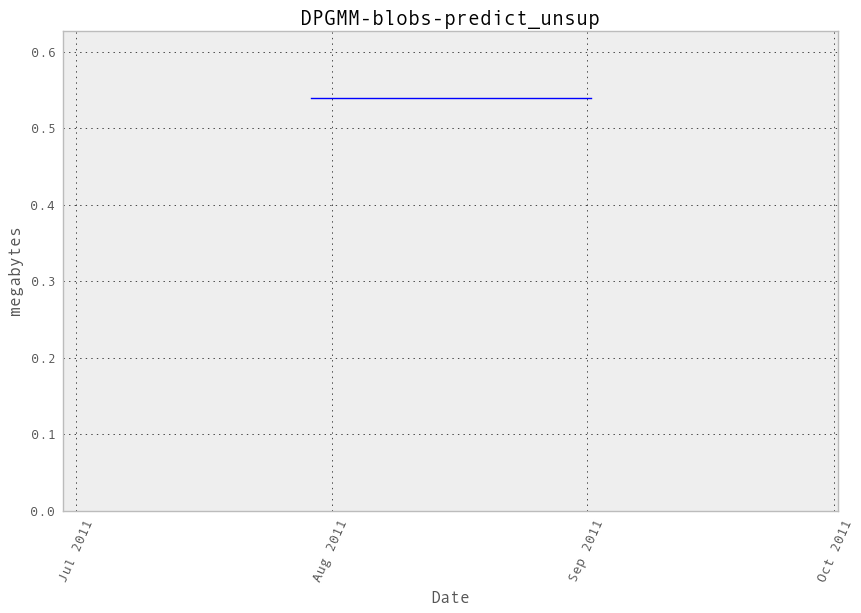Additional output
cProfile
615 function calls in 0.016 seconds
Ordered by: cumulative time
ncalls tottime percall cumtime percall filename:lineno(function)
1 0.000 0.000 0.016 0.016 /hardmnt/goblin1/home/nivlad/balls/vbench/vbench/benchmark.py:257(f)
1 0.000 0.000 0.016 0.016 <f>:1(<module>)
1 0.000 0.000 0.016 0.016 /hardmnt/goblin1/home/nivlad/balls/scikit-learn/sklearn/mixture/gmm.py:353(predict)
1 0.000 0.000 0.015 0.015 /hardmnt/goblin1/home/nivlad/balls/scikit-learn/sklearn/mixture/dpgmm.py:224(eval)
1 0.000 0.000 0.013 0.013 /hardmnt/goblin1/home/nivlad/balls/scikit-learn/sklearn/mixture/dpgmm.py:92(_bound_state_log_lik)
10 0.000 0.000 0.013 0.001 /hardmnt/goblin1/home/nivlad/balls/scikit-learn/sklearn/mixture/dpgmm.py:86(_sym_quad_form)
10 0.001 0.000 0.013 0.001 /home/nivlad/.local/lib/python2.7/site-packages/scipy/spatial/distance.py:1693(cdist)
10 0.010 0.001 0.010 0.001 {scipy.spatial._distance_wrap.cdist_mahalanobis_wrap}
1 0.001 0.001 0.001 0.001 /hardmnt/goblin1/home/nivlad/balls/scikit-learn/sklearn/mixture/dpgmm.py:36(log_normalize)
30 0.000 0.000 0.001 0.000 /home/nivlad/.local/lib/python2.7/site-packages/scipy/spatial/distance.py:132(_copy_arrays_if_base_present)
30 0.000 0.000 0.001 0.000 /home/nivlad/.local/lib/python2.7/site-packages/scipy/spatial/distance.py:120(_copy_array_if_base_present)
30 0.000 0.000 0.001 0.000 /home/nivlad/.local/lib/python2.7/site-packages/numpy/core/numerictypes.py:703(issubsctype)
1 0.001 0.001 0.001 0.001 /hardmnt/goblin1/home/nivlad/balls/scikit-learn/sklearn/utils/extmath.py:210(logsumexp)
60 0.000 0.000 0.001 0.000 /home/nivlad/.local/lib/python2.7/site-packages/numpy/core/numerictypes.py:608(obj2sctype)
31 0.000 0.000 0.000 0.000 /home/nivlad/.local/lib/python2.7/site-packages/numpy/core/numeric.py:167(asarray)
31 0.000 0.000 0.000 0.000 {numpy.core.multiarray.array}
13 0.000 0.000 0.000 0.000 /hardmnt/goblin1/home/nivlad/balls/scikit-learn/sklearn/mixture/dpgmm.py:28(digamma)
90 0.000 0.000 0.000 0.000 {issubclass}
50 0.000 0.000 0.000 0.000 /home/nivlad/.local/lib/python2.7/site-packages/scipy/spatial/distance.py:151(_convert_to_double)
14 0.000 0.000 0.000 0.000 /home/nivlad/.local/lib/python2.7/site-packages/numpy/core/getlimits.py:91(__new__)
103 0.000 0.000 0.000 0.000 {isinstance}
3 0.000 0.000 0.000 0.000 /home/nivlad/.local/lib/python2.7/site-packages/numpy/core/fromnumeric.py:1379(sum)
2 0.000 0.000 0.000 0.000 {method 'max' of 'numpy.ndarray' objects}
3 0.000 0.000 0.000 0.000 {method 'sum' of 'numpy.ndarray' objects}
12 0.000 0.000 0.000 0.000 {numpy.core.multiarray.zeros}
10 0.000 0.000 0.000 0.000 {method 'reshape' of 'numpy.ndarray' objects}
14 0.000 0.000 0.000 0.000 {method 'get' of 'dict' objects}
1 0.000 0.000 0.000 0.000 {method 'argmax' of 'numpy.ndarray' objects}
2 0.000 0.000 0.000 0.000 /home/nivlad/.local/lib/python2.7/site-packages/numpy/core/numeric.py:1069(rollaxis)
20 0.000 0.000 0.000 0.000 {len}
1 0.000 0.000 0.000 0.000 {method 'copy' of 'numpy.ndarray' objects}
10 0.000 0.000 0.000 0.000 {method 'lower' of 'str' objects}
1 0.000 0.000 0.000 0.000 /home/nivlad/.local/lib/python2.7/site-packages/numpy/core/fromnumeric.py:397(swapaxes)
10 0.000 0.000 0.000 0.000 {callable}
1 0.000 0.000 0.000 0.000 {numpy.core.multiarray.empty}
1 0.000 0.000 0.000 0.000 {method 'remove' of 'list' objects}
1 0.000 0.000 0.000 0.000 {method 'swapaxes' of 'numpy.ndarray' objects}
1 0.000 0.000 0.000 0.000 {method 'transpose' of 'numpy.ndarray' objects}
1 0.000 0.000 0.000 0.000 {method 'insert' of 'list' objects}
1 0.000 0.000 0.000 0.000 {range}
1 0.000 0.000 0.000 0.000 {method 'disable' of '_lsprof.Profiler' objects}
.. container::
LineProfiler
Timer unit: 1e-06 s
File: /hardmnt/goblin1/home/nivlad/balls/scikit-learn/sklearn/mixture/gmm.py
Function: predict at line 353
Total time: 0.017367 s
Line # Hits Time Per Hit % Time Line Contents
==============================================================
353 def predict(self, X):
354 """Predict label for data.
355
356 Parameters
357 ----------
358 X : array-like, shape = [n_samples, n_features]
359
360 Returns
361 -------
362 C : array, shape = (n_samples,)
363 """
364 1 17325 17325.0 99.8 logprob, responsibilities = self.eval(X)
365 1 42 42.0 0.2 return responsibilities.argmax(axis=1)
GMM-blobs-fit_unsup¶
Benchmark setup
from sklearn.mixture import GMM
from deps import load_data
kwargs = {'n_components': 10, 'covariance_type': 'full'}
X, y, X_t, y_t = load_data('blobs')
obj = GMM(**kwargs)
Benchmark statement
obj.fit(X)
Execution time
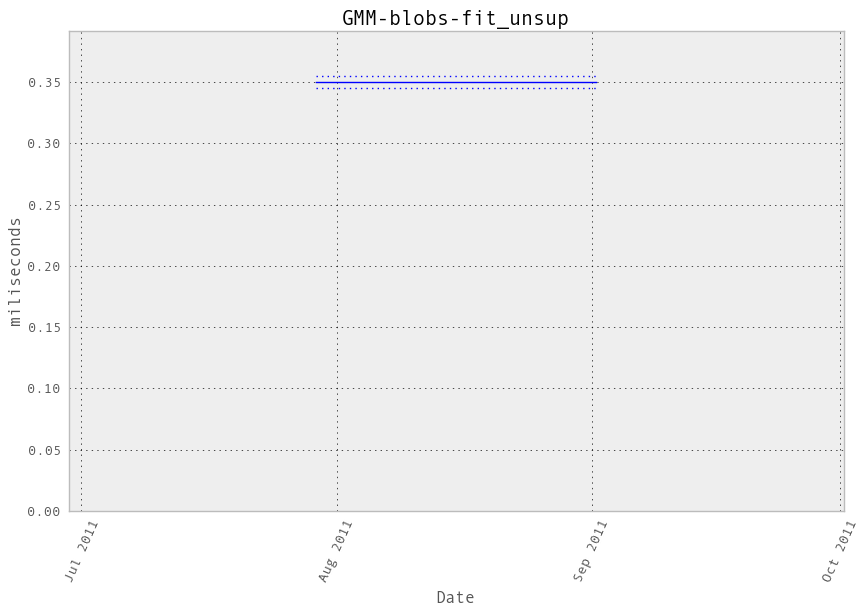Memory usage
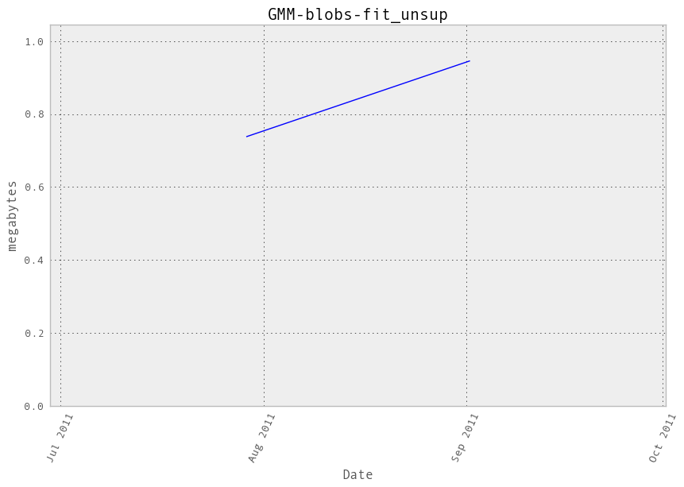Additional output
cProfile
17544 function calls in 0.392 seconds
Ordered by: cumulative time
ncalls tottime percall cumtime percall filename:lineno(function)
1 0.000 0.000 0.392 0.392 /hardmnt/goblin1/home/nivlad/balls/vbench/vbench/benchmark.py:257(f)
1 0.000 0.000 0.392 0.392 <f>:1(<module>)
1 0.000 0.000 0.392 0.392 /hardmnt/goblin1/home/nivlad/balls/scikit-learn/sklearn/mixture/gmm.py:434(fit)
1 0.000 0.000 0.159 0.159 /hardmnt/goblin1/home/nivlad/balls/scikit-learn/sklearn/cluster/k_means_.py:738(fit)
1 0.000 0.000 0.158 0.158 /hardmnt/goblin1/home/nivlad/balls/scikit-learn/sklearn/cluster/k_means_.py:151(k_means)
10 0.001 0.000 0.157 0.016 /hardmnt/goblin1/home/nivlad/balls/scikit-learn/sklearn/cluster/k_means_.py:303(_kmeans_single)
4 0.004 0.001 0.131 0.033 /hardmnt/goblin1/home/nivlad/balls/scikit-learn/sklearn/mixture/gmm.py:275(eval)
4 0.000 0.000 0.123 0.031 /hardmnt/goblin1/home/nivlad/balls/scikit-learn/sklearn/mixture/gmm.py:23(log_multivariate_normal_density)
4 0.012 0.003 0.123 0.031 /hardmnt/goblin1/home/nivlad/balls/scikit-learn/sklearn/mixture/gmm.py:626(_log_multivariate_normal_density_full)
184 0.115 0.001 0.115 0.001 {numpy.core.multiarray.dot}
3 0.000 0.000 0.099 0.033 /hardmnt/goblin1/home/nivlad/balls/scikit-learn/sklearn/mixture/gmm.py:527(_do_mstep)
3 0.007 0.002 0.097 0.032 /hardmnt/goblin1/home/nivlad/balls/scikit-learn/sklearn/mixture/gmm.py:729(_covar_mstep_full)
10 0.000 0.000 0.096 0.010 /hardmnt/goblin1/home/nivlad/balls/scikit-learn/sklearn/cluster/k_means_.py:525(_init_centroids)
10 0.013 0.001 0.095 0.010 /hardmnt/goblin1/home/nivlad/balls/scikit-learn/sklearn/cluster/k_means_.py:36(_k_init)
120 0.013 0.000 0.095 0.001 /hardmnt/goblin1/home/nivlad/balls/scikit-learn/sklearn/metrics/pairwise.py:101(euclidean_distances)
40 0.065 0.002 0.095 0.002 /home/nivlad/.local/lib/python2.7/site-packages/scipy/linalg/basic.py:72(solve_triangular)
120 0.002 0.000 0.039 0.000 /hardmnt/goblin1/home/nivlad/balls/scikit-learn/sklearn/metrics/pairwise.py:52(check_pairwise_arrays)
120 0.022 0.000 0.031 0.000 /home/nivlad/.local/lib/python2.7/site-packages/numpy/lib/function_base.py:526(asarray_chkfinite)
361 0.002 0.000 0.031 0.000 /hardmnt/goblin1/home/nivlad/balls/scikit-learn/sklearn/utils/validation.py:67(atleast2d_or_csr)
20 0.023 0.001 0.031 0.002 /hardmnt/goblin1/home/nivlad/balls/scikit-learn/sklearn/cluster/k_means_.py:478(_centers)
120 0.002 0.000 0.029 0.000 /hardmnt/goblin1/home/nivlad/balls/scikit-learn/sklearn/utils/extmath.py:70(safe_sparse_dot)
20 0.000 0.000 0.028 0.001 /hardmnt/goblin1/home/nivlad/balls/scikit-learn/sklearn/cluster/k_means_.py:431(_labels_inertia)
20 0.006 0.000 0.027 0.001 /hardmnt/goblin1/home/nivlad/balls/scikit-learn/sklearn/cluster/k_means_.py:414(_labels_inertia_precompute_dense)
40 0.000 0.000 0.027 0.001 {map}
1256 0.022 0.000 0.022 0.000 {method 'sum' of 'numpy.ndarray' objects}
1116 0.003 0.000 0.021 0.000 /home/nivlad/.local/lib/python2.7/site-packages/scipy/sparse/base.py:553(isspmatrix)
601 0.006 0.000 0.020 0.000 /hardmnt/goblin1/home/nivlad/balls/scikit-learn/sklearn/utils/validation.py:10(assert_all_finite)
1116 0.012 0.000 0.018 0.000 /home/nivlad/.local/lib/python2.7/site-packages/scipy/sparse/sputils.py:116(_isinstance)
240 0.001 0.000 0.016 0.000 /hardmnt/goblin1/home/nivlad/balls/scikit-learn/sklearn/utils/validation.py:23(safe_asarray)
40 0.000 0.000 0.012 0.000 /home/nivlad/.local/lib/python2.7/site-packages/scipy/linalg/decomp_cholesky.py:30(cholesky)
40 0.005 0.000 0.012 0.000 /home/nivlad/.local/lib/python2.7/site-packages/scipy/linalg/decomp_cholesky.py:13(_cholesky)
361 0.002 0.000 0.011 0.000 /hardmnt/goblin1/home/nivlad/balls/scikit-learn/sklearn/utils/validation.py:62(array2d)
440 0.010 0.000 0.010 0.000 {method 'any' of 'numpy.ndarray' objects}
361 0.004 0.000 0.007 0.000 /home/nivlad/.local/lib/python2.7/site-packages/numpy/core/shape_base.py:58(atleast_2d)
224 0.001 0.000 0.006 0.000 /home/nivlad/.local/lib/python2.7/site-packages/numpy/core/fromnumeric.py:1379(sum)
203 0.006 0.000 0.006 0.000 {method 'mean' of 'numpy.ndarray' objects}
80 0.001 0.000 0.005 0.000 /home/nivlad/.local/lib/python2.7/site-packages/scipy/linalg/lapack.py:60(get_lapack_funcs)
766 0.002 0.000 0.004 0.000 /home/nivlad/.local/lib/python2.7/site-packages/numpy/core/numeric.py:167(asarray)
2392 0.004 0.000 0.004 0.000 {method 'split' of 'str' objects}
4 0.004 0.001 0.004 0.001 /hardmnt/goblin1/home/nivlad/balls/scikit-learn/sklearn/utils/extmath.py:210(logsumexp)
1130 0.004 0.000 0.004 0.000 {numpy.core.multiarray.array}
1 0.000 0.000 0.003 0.003 /home/nivlad/.local/lib/python2.7/site-packages/numpy/lib/function_base.py:1888(cov)
80 0.001 0.000 0.003 0.000 /home/nivlad/.local/lib/python2.7/site-packages/scipy/linalg/lapack.py:45(find_best_lapack_type)
1404 0.003 0.000 0.003 0.000 {isinstance}
200 0.001 0.000 0.002 0.000 /home/nivlad/.local/lib/python2.7/site-packages/numpy/core/fromnumeric.py:1508(any)
361 0.001 0.000 0.002 0.000 /home/nivlad/.local/lib/python2.7/site-packages/numpy/core/numeric.py:237(asanyarray)
90 0.001 0.000 0.001 0.000 {method 'cumsum' of 'numpy.ndarray' objects}
1489 0.001 0.000 0.001 0.000 {len}
40 0.000 0.000 0.001 0.000 /home/nivlad/.local/lib/python2.7/site-packages/numpy/core/fromnumeric.py:902(diagonal)
120 0.000 0.000 0.001 0.000 /home/nivlad/.local/lib/python2.7/site-packages/scipy/linalg/lapack.py:23(cast_to_lapack_prefix)
30 0.000 0.000 0.001 0.000 /home/nivlad/.local/lib/python2.7/site-packages/numpy/core/numeric.py:2036(seterr)
31 0.000 0.000 0.001 0.000 /home/nivlad/.local/lib/python2.7/site-packages/numpy/lib/twodim_base.py:169(eye)
90 0.000 0.000 0.001 0.000 /home/nivlad/.local/lib/python2.7/site-packages/numpy/core/fromnumeric.py:757(searchsorted)
90 0.001 0.000 0.001 0.000 {method 'random_sample' of 'mtrand.RandomState' objects}
40 0.001 0.000 0.001 0.000 {method 'diagonal' of 'numpy.ndarray' objects}
97 0.001 0.000 0.001 0.000 {numpy.core.multiarray.empty}
565 0.001 0.000 0.001 0.000 {method 'append' of 'list' objects}
1 0.000 0.000 0.001 0.001 /hardmnt/goblin1/home/nivlad/balls/scikit-learn/sklearn/cluster/k_means_.py:142(_tolerance)
90 0.000 0.000 0.000 0.000 {method 'searchsorted' of 'numpy.ndarray' objects}
1 0.000 0.000 0.000 0.000 /home/nivlad/.local/lib/python2.7/site-packages/numpy/core/fromnumeric.py:2470(var)
1 0.000 0.000 0.000 0.000 {method 'var' of 'numpy.ndarray' objects}
64 0.000 0.000 0.000 0.000 {method 'copy' of 'numpy.ndarray' objects}
30 0.000 0.000 0.000 0.000 /home/nivlad/.local/lib/python2.7/site-packages/numpy/core/numeric.py:2132(geterr)
240 0.000 0.000 0.000 0.000 {issubclass}
20 0.000 0.000 0.000 0.000 /home/nivlad/.local/lib/python2.7/site-packages/numpy/core/numeric.py:1791(ones)
136 0.000 0.000 0.000 0.000 {range}
41 0.000 0.000 0.000 0.000 {numpy.core.multiarray.zeros}
32 0.000 0.000 0.000 0.000 /hardmnt/goblin1/home/nivlad/balls/scikit-learn/sklearn/utils/validation.py:173(check_random_state)
1 0.000 0.000 0.000 0.000 /hardmnt/goblin1/home/nivlad/balls/scikit-learn/sklearn/cluster/k_means_.py:710(_check_fit_data)
4 0.000 0.000 0.000 0.000 {method 'max' of 'numpy.ndarray' objects}
2 0.000 0.000 0.000 0.000 /home/nivlad/.local/lib/python2.7/site-packages/numpy/lib/shape_base.py:766(tile)
60 0.000 0.000 0.000 0.000 {method 'fill' of 'numpy.ndarray' objects}
60 0.000 0.000 0.000 0.000 {numpy.core.umath.geterrobj}
80 0.000 0.000 0.000 0.000 /home/nivlad/.local/lib/python2.7/site-packages/numpy/core/numeric.py:449(isfortran)
80 0.000 0.000 0.000 0.000 {method 'sort' of 'list' objects}
80 0.000 0.000 0.000 0.000 {getattr}
1 0.000 0.000 0.000 0.000 /hardmnt/goblin1/home/nivlad/balls/scikit-learn/sklearn/mixture/gmm.py:695(distribute_covar_matrix_to_match_covariance_type)
1 0.000 0.000 0.000 0.000 /hardmnt/goblin1/home/nivlad/balls/scikit-learn/sklearn/cluster/k_means_.py:404(_squared_norms)
1 0.000 0.000 0.000 0.000 /hardmnt/goblin1/home/nivlad/balls/scikit-learn/sklearn/utils/validation.py:33(as_float_array)
4 0.000 0.000 0.000 0.000 /home/nivlad/.local/lib/python2.7/site-packages/numpy/core/numeric.py:1069(rollaxis)
80 0.000 0.000 0.000 0.000 /home/nivlad/.local/lib/python2.7/site-packages/scipy/linalg/misc.py:22(_datacopied)
2 0.000 0.000 0.000 0.000 {method 'repeat' of 'numpy.ndarray' objects}
30 0.000 0.000 0.000 0.000 {numpy.core.umath.seterrobj}
40 0.000 0.000 0.000 0.000 {method 'get' of 'dict' objects}
1 0.000 0.000 0.000 0.000 /home/nivlad/.local/lib/python2.7/site-packages/numpy/core/fromnumeric.py:2299(mean)
1 0.000 0.000 0.000 0.000 /hardmnt/goblin1/home/nivlad/balls/scikit-learn/sklearn/cluster/k_means_.py:690(__init__)
10 0.000 0.000 0.000 0.000 {method 'randint' of 'mtrand.RandomState' objects}
6 0.000 0.000 0.000 0.000 {hasattr}
4 0.000 0.000 0.000 0.000 {method 'transpose' of 'numpy.ndarray' objects}
4 0.000 0.000 0.000 0.000 {method 'reshape' of 'numpy.ndarray' objects}
6 0.000 0.000 0.000 0.000 {max}
4 0.000 0.000 0.000 0.000 {method 'remove' of 'list' objects}
4 0.000 0.000 0.000 0.000 {method 'insert' of 'list' objects}
3 0.000 0.000 0.000 0.000 {abs}
1 0.000 0.000 0.000 0.000 {method 'squeeze' of 'numpy.ndarray' objects}
1 0.000 0.000 0.000 0.000 {method 'conj' of 'numpy.ndarray' objects}
1 0.000 0.000 0.000 0.000 {method 'disable' of '_lsprof.Profiler' objects}
.. container::
LineProfiler
Timer unit: 1e-06 s
File: /hardmnt/goblin1/home/nivlad/balls/scikit-learn/sklearn/mixture/gmm.py
Function: fit at line 434
Total time: 0.401835 s
Line # Hits Time Per Hit % Time Line Contents
==============================================================
434 def fit(self, X, **kwargs):
435 """Estimate model parameters with the expectation-maximization
436 algorithm.
437
438 A initialization step is performed before entering the em
439 algorithm. If you want to avoid this step, set the keyword
440 argument init_params to the empty string '' when creating the
441 GMM object. Likewise, if you would like just to do an
442 initialization, set n_iter=0.
443
444 Parameters
445 ----------
446 X : array_like, shape (n, n_features)
447 List of n_features-dimensional data points. Each row
448 corresponds to a single data point.
449 """
450 ## initialization step
451 1 20 20.0 0.0 X = np.asarray(X)
452 1 7 7.0 0.0 if X.ndim == 1:
453 X = X[:, np.newaxis]
454 1 8 8.0 0.0 if X.shape[0] < self.n_components:
455 raise ValueError(
456 'GMM estimation with %s components, but got only %s samples' %
457 (self.n_components, X.shape[0]))
458 1 6 6.0 0.0 if kwargs:
459 warnings.warn("Setting parameters in the 'fit' method is"
460 "deprecated. Set it on initialization instead.",
461 DeprecationWarning)
462 # initialisations for in case the user still adds parameters to fit
463 # so things don't break
464 if 'n_iter' in kwargs:
465 self.n_iter = kwargs['n_iter']
466 if 'n_init' in kwargs:
467 if kwargs['n_init'] < 1:
468 raise ValueError('GMM estimation requires n_init > 0.')
469 else:
470 self.n_init = kwargs['n_init']
471 if 'params' in kwargs:
472 self.params = kwargs['params']
473 if 'init_params' in kwargs:
474 self.init_params = kwargs['init_params']
475
476 1 6 6.0 0.0 max_log_prob = - np.infty
477
478 2 15 7.5 0.0 for _ in range(self.n_init):
479 1 7 7.0 0.0 if 'm' in self.init_params or not hasattr(self, 'means_'):
480 1 6 6.0 0.0 self.means_ = cluster.KMeans(
481 1 170557 170557.0 42.4 n_clusters=self.n_components).fit(X).cluster_centers_
482
483 1 8 8.0 0.0 if 'w' in self.init_params or not hasattr(self, 'weights_'):
484 1 8 8.0 0.0 self.weights_ = np.tile(1.0 / self.n_components,
485 1 89 89.0 0.0 self.n_components)
486
487 1 7 7.0 0.0 if 'c' in self.init_params or not hasattr(self, 'covars_'):
488 1 2605 2605.0 0.6 cv = np.cov(X.T) + self.min_covar * np.eye(X.shape[1])
489 1 8 8.0 0.0 if not cv.shape:
490 cv.shape = (1, 1)
491 self.covars_ = \
492 1 6 6.0 0.0 distribute_covar_matrix_to_match_covariance_type(
493 1 166 166.0 0.0 cv, self.covariance_type, self.n_components)
494
495 # EM algorithms
496 1 7 7.0 0.0 log_likelihood = []
497 # reset self.converged_ to False
498 1 7 7.0 0.0 self.converged_ = False
499 4 32 8.0 0.0 for i in xrange(self.n_iter):
500 # Expectation step
501 4 133713 33428.2 33.3 curr_log_likelihood, responsibilities = self.eval(X)
502 4 82 20.5 0.0 log_likelihood.append(curr_log_likelihood.sum())
503
504 # Check for convergence.
505 4 42 10.5 0.0 if i > 0 and abs(log_likelihood[-1] - log_likelihood[-2]) < \
506 3 38 12.7 0.0 self.thresh:
507 1 7 7.0 0.0 self.converged_ = True
508 1 6 6.0 0.0 break
509
510 # Maximization step
511 3 23 7.7 0.0 self._do_mstep(X, responsibilities, self.params,
512 3 94230 31410.0 23.4 self.min_covar)
513
514 # if the results are better, keep it
515 1 6 6.0 0.0 if self.n_iter:
516 1 9 9.0 0.0 if log_likelihood[-1] > max_log_prob:
517 1 10 10.0 0.0 max_log_prob = log_likelihood[-1]
518 1 7 7.0 0.0 best_params = {'weights': self.weights_,
519 1 6 6.0 0.0 'means': self.means_,
520 1 6 6.0 0.0 'covars': self.covars_}
521 1 6 6.0 0.0 if self.n_iter:
522 1 6 6.0 0.0 self.covars_ = best_params['covars']
523 1 6 6.0 0.0 self.means_ = best_params['means']
524 1 6 6.0 0.0 self.weights_ = best_params['weights']
525 1 51 51.0 0.0 return self
GMM-blobs-predict_unsup¶
Benchmark setup
from sklearn.mixture import GMM
from deps import load_data
kwargs = {'n_components': 10, 'covariance_type': 'full'}
X, y, X_t, y_t = load_data('blobs')
obj = GMM(**kwargs)
obj.fit(X)
Benchmark statement
obj.predict(X_t)
Execution time
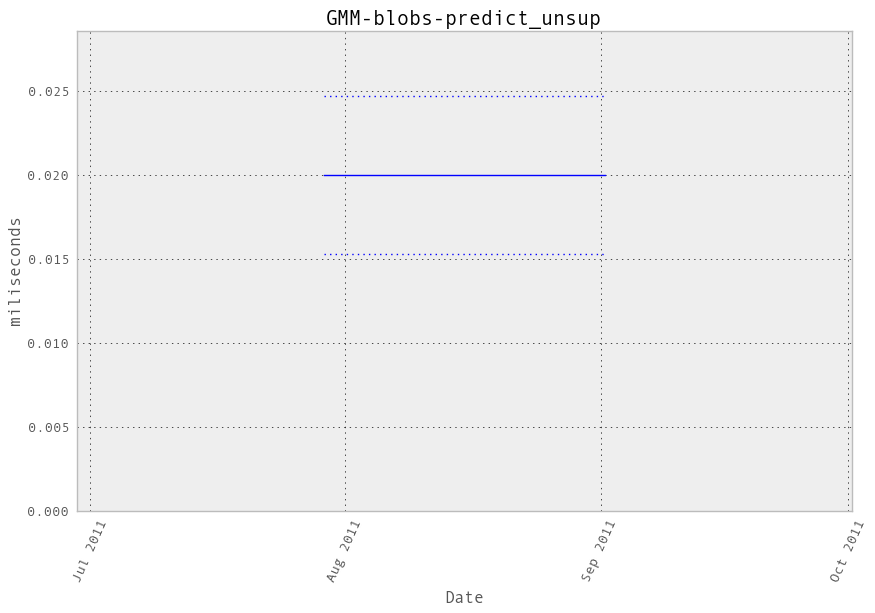Memory usage
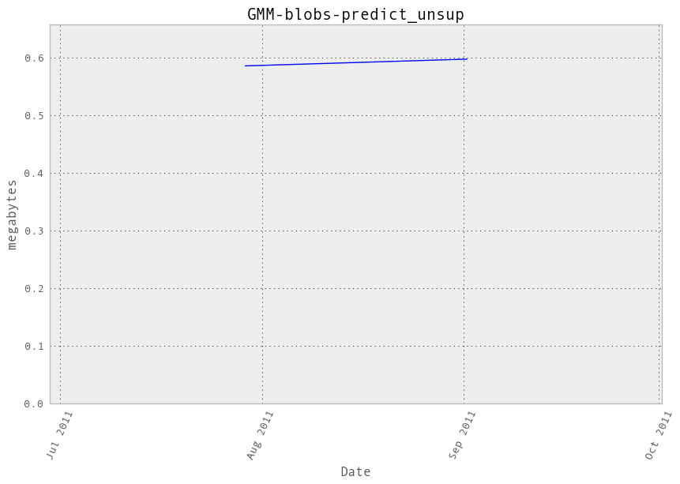Additional output
cProfile
683 function calls in 0.024 seconds
Ordered by: cumulative time
ncalls tottime percall cumtime percall filename:lineno(function)
1 0.000 0.000 0.024 0.024 /hardmnt/goblin1/home/nivlad/balls/vbench/vbench/benchmark.py:257(f)
1 0.000 0.000 0.024 0.024 <f>:1(<module>)
1 0.000 0.000 0.024 0.024 /hardmnt/goblin1/home/nivlad/balls/scikit-learn/sklearn/mixture/gmm.py:353(predict)
1 0.001 0.001 0.024 0.024 /hardmnt/goblin1/home/nivlad/balls/scikit-learn/sklearn/mixture/gmm.py:275(eval)
1 0.000 0.000 0.023 0.023 /hardmnt/goblin1/home/nivlad/balls/scikit-learn/sklearn/mixture/gmm.py:23(log_multivariate_normal_density)
1 0.002 0.002 0.023 0.023 /hardmnt/goblin1/home/nivlad/balls/scikit-learn/sklearn/mixture/gmm.py:626(_log_multivariate_normal_density_full)
10 0.011 0.001 0.017 0.002 /home/nivlad/.local/lib/python2.7/site-packages/scipy/linalg/basic.py:72(solve_triangular)
30 0.004 0.000 0.006 0.000 /home/nivlad/.local/lib/python2.7/site-packages/numpy/lib/function_base.py:526(asarray_chkfinite)
10 0.000 0.000 0.005 0.001 {map}
10 0.000 0.000 0.003 0.000 /home/nivlad/.local/lib/python2.7/site-packages/scipy/linalg/decomp_cholesky.py:30(cholesky)
10 0.001 0.000 0.003 0.000 /home/nivlad/.local/lib/python2.7/site-packages/scipy/linalg/decomp_cholesky.py:13(_cholesky)
60 0.002 0.000 0.002 0.000 {method 'any' of 'numpy.ndarray' objects}
20 0.000 0.000 0.001 0.000 /home/nivlad/.local/lib/python2.7/site-packages/scipy/linalg/lapack.py:60(get_lapack_funcs)
1 0.001 0.001 0.001 0.001 /hardmnt/goblin1/home/nivlad/balls/scikit-learn/sklearn/utils/extmath.py:210(logsumexp)
21 0.000 0.000 0.001 0.000 /home/nivlad/.local/lib/python2.7/site-packages/numpy/core/fromnumeric.py:1379(sum)
20 0.000 0.000 0.001 0.000 /home/nivlad/.local/lib/python2.7/site-packages/scipy/linalg/lapack.py:45(find_best_lapack_type)
21 0.001 0.000 0.001 0.000 {method 'sum' of 'numpy.ndarray' objects}
41 0.000 0.000 0.000 0.000 /home/nivlad/.local/lib/python2.7/site-packages/numpy/core/numeric.py:167(asarray)
10 0.000 0.000 0.000 0.000 /home/nivlad/.local/lib/python2.7/site-packages/numpy/core/fromnumeric.py:902(diagonal)
30 0.000 0.000 0.000 0.000 /home/nivlad/.local/lib/python2.7/site-packages/scipy/linalg/lapack.py:23(cast_to_lapack_prefix)
10 0.000 0.000 0.000 0.000 {method 'diagonal' of 'numpy.ndarray' objects}
41 0.000 0.000 0.000 0.000 {numpy.core.multiarray.array}
60 0.000 0.000 0.000 0.000 {issubclass}
40 0.000 0.000 0.000 0.000 {method 'split' of 'str' objects}
21 0.000 0.000 0.000 0.000 {isinstance}
50 0.000 0.000 0.000 0.000 {method 'append' of 'list' objects}
21 0.000 0.000 0.000 0.000 {range}
1 0.000 0.000 0.000 0.000 {method 'max' of 'numpy.ndarray' objects}
20 0.000 0.000 0.000 0.000 /home/nivlad/.local/lib/python2.7/site-packages/numpy/core/numeric.py:449(isfortran)
20 0.000 0.000 0.000 0.000 {method 'sort' of 'list' objects}
20 0.000 0.000 0.000 0.000 {getattr}
1 0.000 0.000 0.000 0.000 /home/nivlad/.local/lib/python2.7/site-packages/numpy/core/numeric.py:1069(rollaxis)
20 0.000 0.000 0.000 0.000 /home/nivlad/.local/lib/python2.7/site-packages/scipy/linalg/misc.py:22(_datacopied)
41 0.000 0.000 0.000 0.000 {len}
1 0.000 0.000 0.000 0.000 {method 'argmax' of 'numpy.ndarray' objects}
10 0.000 0.000 0.000 0.000 {method 'get' of 'dict' objects}
1 0.000 0.000 0.000 0.000 {numpy.core.multiarray.empty}
1 0.000 0.000 0.000 0.000 {method 'remove' of 'list' objects}
1 0.000 0.000 0.000 0.000 {method 'transpose' of 'numpy.ndarray' objects}
1 0.000 0.000 0.000 0.000 {hasattr}
1 0.000 0.000 0.000 0.000 {method 'insert' of 'list' objects}
1 0.000 0.000 0.000 0.000 {method 'disable' of '_lsprof.Profiler' objects}
.. container::
LineProfiler
Timer unit: 1e-06 s
File: /hardmnt/goblin1/home/nivlad/balls/scikit-learn/sklearn/mixture/gmm.py
Function: predict at line 353
Total time: 0.02486 s
Line # Hits Time Per Hit % Time Line Contents
==============================================================
353 def predict(self, X):
354 """Predict label for data.
355
356 Parameters
357 ----------
358 X : array-like, shape = [n_samples, n_features]
359
360 Returns
361 -------
362 C : array, shape = (n_samples,)
363 """
364 1 24829 24829.0 99.9 logprob, responsibilities = self.eval(X)
365 1 31 31.0 0.1 return responsibilities.argmax(axis=1)
VBGMM-blobs-fit_unsup¶
Benchmark setup
from sklearn.mixture import VBGMM
from deps import load_data
kwargs = {'n_components': 10, 'covariance_type': 'full'}
X, y, X_t, y_t = load_data('blobs')
obj = VBGMM(**kwargs)
Benchmark statement
obj.fit(X)
Execution time
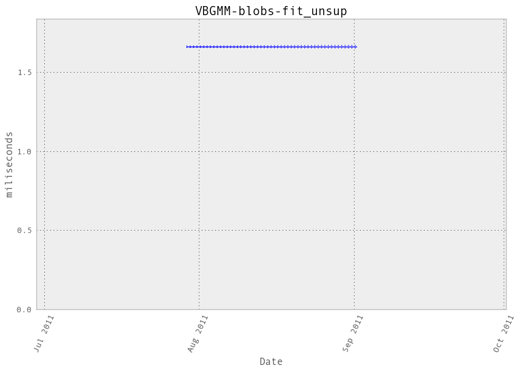Memory usage
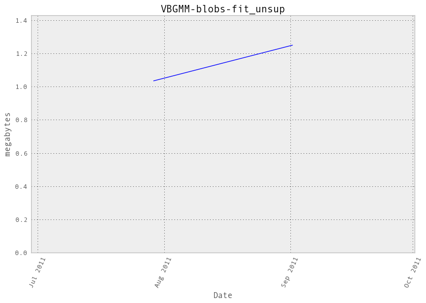Additional output
cProfile
37477 function calls in 1.753 seconds
Ordered by: cumulative time
ncalls tottime percall cumtime percall filename:lineno(function)
1 0.000 0.000 1.753 1.753 /hardmnt/goblin1/home/nivlad/balls/vbench/vbench/benchmark.py:257(f)
1 0.000 0.000 1.753 1.753 <f>:1(<module>)
1 0.001 0.001 1.753 1.753 /hardmnt/goblin1/home/nivlad/balls/scikit-learn/sklearn/mixture/dpgmm.py:472(fit)
10 0.000 0.000 1.319 0.132 /hardmnt/goblin1/home/nivlad/balls/scikit-learn/sklearn/mixture/dpgmm.py:372(_do_mstep)
200 0.841 0.004 0.907 0.005 /home/nivlad/.local/lib/python2.7/site-packages/scipy/linalg/basic.py:365(lstsq)
10 0.037 0.004 0.802 0.080 /hardmnt/goblin1/home/nivlad/balls/scikit-learn/sklearn/mixture/dpgmm.py:303(_update_precisions)
10 0.019 0.002 0.515 0.051 /hardmnt/goblin1/home/nivlad/balls/scikit-learn/sklearn/mixture/dpgmm.py:284(_update_means)
100 0.002 0.000 0.440 0.004 /home/nivlad/.local/lib/python2.7/site-packages/scipy/linalg/basic.py:457(pinv)
321 0.295 0.001 0.295 0.001 {numpy.core.multiarray.dot}
10 0.001 0.000 0.213 0.021 /hardmnt/goblin1/home/nivlad/balls/scikit-learn/sklearn/mixture/dpgmm.py:663(eval)
10 0.004 0.000 0.189 0.019 /hardmnt/goblin1/home/nivlad/balls/scikit-learn/sklearn/mixture/dpgmm.py:92(_bound_state_log_lik)
100 0.002 0.000 0.185 0.002 /hardmnt/goblin1/home/nivlad/balls/scikit-learn/sklearn/mixture/dpgmm.py:86(_sym_quad_form)
100 0.006 0.000 0.182 0.002 /home/nivlad/.local/lib/python2.7/site-packages/scipy/spatial/distance.py:1693(cdist)
1 0.000 0.000 0.162 0.162 /hardmnt/goblin1/home/nivlad/balls/scikit-learn/sklearn/cluster/k_means_.py:738(fit)
1 0.000 0.000 0.162 0.162 /hardmnt/goblin1/home/nivlad/balls/scikit-learn/sklearn/cluster/k_means_.py:151(k_means)
10 0.001 0.000 0.161 0.016 /hardmnt/goblin1/home/nivlad/balls/scikit-learn/sklearn/cluster/k_means_.py:303(_kmeans_single)
100 0.159 0.002 0.159 0.002 {scipy.spatial._distance_wrap.cdist_mahalanobis_wrap}
10 0.000 0.000 0.096 0.010 /hardmnt/goblin1/home/nivlad/balls/scikit-learn/sklearn/cluster/k_means_.py:525(_init_centroids)
121 0.013 0.000 0.096 0.001 /hardmnt/goblin1/home/nivlad/balls/scikit-learn/sklearn/metrics/pairwise.py:101(euclidean_distances)
10 0.013 0.001 0.096 0.010 /hardmnt/goblin1/home/nivlad/balls/scikit-learn/sklearn/cluster/k_means_.py:36(_k_init)
600 0.044 0.000 0.068 0.000 /home/nivlad/.local/lib/python2.7/site-packages/numpy/lib/function_base.py:526(asarray_chkfinite)
10 0.000 0.000 0.055 0.006 /hardmnt/goblin1/home/nivlad/balls/scikit-learn/sklearn/mixture/dpgmm.py:450(_logprior)
10 0.001 0.000 0.047 0.005 /hardmnt/goblin1/home/nivlad/balls/scikit-learn/sklearn/mixture/dpgmm.py:414(_bound_precisions)
100 0.003 0.000 0.047 0.000 /hardmnt/goblin1/home/nivlad/balls/scikit-learn/sklearn/mixture/dpgmm.py:68(_bound_wishart)
200 0.002 0.000 0.042 0.000 {map}
121 0.002 0.000 0.039 0.000 /hardmnt/goblin1/home/nivlad/balls/scikit-learn/sklearn/metrics/pairwise.py:52(check_pairwise_arrays)
100 0.018 0.000 0.036 0.000 /home/nivlad/.local/lib/python2.7/site-packages/scipy/linalg/basic.py:336(det)
21 0.024 0.001 0.033 0.002 /hardmnt/goblin1/home/nivlad/balls/scikit-learn/sklearn/cluster/k_means_.py:478(_centers)
2070 0.032 0.000 0.032 0.000 {method 'sum' of 'numpy.ndarray' objects}
364 0.002 0.000 0.032 0.000 /hardmnt/goblin1/home/nivlad/balls/scikit-learn/sklearn/utils/validation.py:67(atleast2d_or_csr)
21 0.000 0.000 0.030 0.001 /hardmnt/goblin1/home/nivlad/balls/scikit-learn/sklearn/cluster/k_means_.py:431(_labels_inertia)
121 0.002 0.000 0.029 0.000 /hardmnt/goblin1/home/nivlad/balls/scikit-learn/sklearn/utils/extmath.py:70(safe_sparse_dot)
200 0.016 0.000 0.029 0.000 /hardmnt/goblin1/home/nivlad/balls/scikit-learn/sklearn/mixture/dpgmm.py:58(wishart_logz)
21 0.006 0.000 0.028 0.001 /hardmnt/goblin1/home/nivlad/balls/scikit-learn/sklearn/cluster/k_means_.py:414(_labels_inertia_precompute_dense)
210 0.010 0.000 0.023 0.000 /hardmnt/goblin1/home/nivlad/balls/scikit-learn/sklearn/mixture/dpgmm.py:48(wishart_log_det)
1062 0.005 0.000 0.022 0.000 /home/nivlad/.local/lib/python2.7/site-packages/numpy/core/fromnumeric.py:1379(sum)
1410 0.022 0.000 0.022 0.000 {method 'any' of 'numpy.ndarray' objects}
1126 0.003 0.000 0.021 0.000 /home/nivlad/.local/lib/python2.7/site-packages/scipy/sparse/base.py:553(isspmatrix)
10 0.009 0.001 0.021 0.002 /hardmnt/goblin1/home/nivlad/balls/scikit-learn/sklearn/mixture/dpgmm.py:36(log_normalize)
606 0.007 0.000 0.020 0.000 /hardmnt/goblin1/home/nivlad/balls/scikit-learn/sklearn/utils/validation.py:10(assert_all_finite)
1937 0.006 0.000 0.019 0.000 /home/nivlad/.local/lib/python2.7/site-packages/numpy/core/numeric.py:167(asarray)
1126 0.012 0.000 0.018 0.000 /home/nivlad/.local/lib/python2.7/site-packages/scipy/sparse/sputils.py:116(_isinstance)
242 0.002 0.000 0.016 0.000 /hardmnt/goblin1/home/nivlad/balls/scikit-learn/sklearn/utils/validation.py:23(safe_asarray)
200 0.004 0.000 0.014 0.000 /home/nivlad/.local/lib/python2.7/site-packages/scipy/linalg/lapack.py:60(get_lapack_funcs)
2302 0.014 0.000 0.014 0.000 {numpy.core.multiarray.array}
364 0.002 0.000 0.011 0.000 /hardmnt/goblin1/home/nivlad/balls/scikit-learn/sklearn/utils/validation.py:62(array2d)
240 0.008 0.000 0.011 0.000 /hardmnt/goblin1/home/nivlad/balls/scikit-learn/sklearn/mixture/dpgmm.py:32(gammaln)
300 0.001 0.000 0.010 0.000 /home/nivlad/.local/lib/python2.7/site-packages/scipy/spatial/distance.py:132(_copy_arrays_if_base_present)
270 0.007 0.000 0.010 0.000 /hardmnt/goblin1/home/nivlad/balls/scikit-learn/sklearn/mixture/dpgmm.py:28(digamma)
10 0.009 0.001 0.010 0.001 /hardmnt/goblin1/home/nivlad/balls/scikit-learn/sklearn/utils/extmath.py:210(logsumexp)
300 0.001 0.000 0.009 0.000 /home/nivlad/.local/lib/python2.7/site-packages/scipy/spatial/distance.py:120(_copy_array_if_base_present)
200 0.004 0.000 0.009 0.000 /home/nivlad/.local/lib/python2.7/site-packages/scipy/linalg/lapack.py:45(find_best_lapack_type)
300 0.002 0.000 0.008 0.000 /home/nivlad/.local/lib/python2.7/site-packages/numpy/core/numerictypes.py:703(issubsctype)
420 0.005 0.000 0.008 0.000 /home/nivlad/.local/lib/python2.7/site-packages/numpy/core/numeric.py:1830(identity)
364 0.004 0.000 0.007 0.000 /home/nivlad/.local/lib/python2.7/site-packages/numpy/core/shape_base.py:58(atleast_2d)
210 0.001 0.000 0.007 0.000 /home/nivlad/.local/lib/python2.7/site-packages/numpy/core/fromnumeric.py:986(trace)
600 0.004 0.000 0.006 0.000 /home/nivlad/.local/lib/python2.7/site-packages/numpy/core/numerictypes.py:608(obj2sctype)
212 0.006 0.000 0.006 0.000 {method 'mean' of 'numpy.ndarray' objects}
3264 0.006 0.000 0.006 0.000 {isinstance}
530 0.003 0.000 0.005 0.000 /home/nivlad/.local/lib/python2.7/site-packages/numpy/core/getlimits.py:91(__new__)
2652 0.005 0.000 0.005 0.000 {method 'split' of 'str' objects}
210 0.005 0.000 0.005 0.000 {method 'trace' of 'numpy.ndarray' objects}
561 0.004 0.000 0.004 0.000 {numpy.core.multiarray.zeros}
10 0.002 0.000 0.004 0.000 /hardmnt/goblin1/home/nivlad/balls/scikit-learn/sklearn/mixture/dpgmm.py:714(_bound_proportions)
100 0.002 0.000 0.003 0.000 /home/nivlad/.local/lib/python2.7/site-packages/scipy/linalg/flinalg.py:24(get_flinalg_funcs)
1700 0.003 0.000 0.003 0.000 {issubclass}
10 0.001 0.000 0.003 0.000 /hardmnt/goblin1/home/nivlad/balls/scikit-learn/sklearn/mixture/dpgmm.py:723(_bound_concentration)
400 0.002 0.000 0.003 0.000 /home/nivlad/.local/lib/python2.7/site-packages/scipy/linalg/lapack.py:23(cast_to_lapack_prefix)
210 0.001 0.000 0.002 0.000 /home/nivlad/.local/lib/python2.7/site-packages/numpy/core/fromnumeric.py:1508(any)
10 0.001 0.000 0.002 0.000 /hardmnt/goblin1/home/nivlad/balls/scikit-learn/sklearn/mixture/dpgmm.py:707(_update_concentration)
550 0.002 0.000 0.002 0.000 {method 'get' of 'dict' objects}
364 0.001 0.000 0.002 0.000 /home/nivlad/.local/lib/python2.7/site-packages/numpy/core/numeric.py:237(asanyarray)
410 0.002 0.000 0.002 0.000 {numpy.core.multiarray.arange}
200 0.002 0.000 0.002 0.000 {method 'astype' of 'numpy.generic' objects}
2335 0.002 0.000 0.002 0.000 {len}
500 0.001 0.000 0.001 0.000 /home/nivlad/.local/lib/python2.7/site-packages/scipy/spatial/distance.py:151(_convert_to_double)
20 0.001 0.000 0.001 0.000 {method 'max' of 'numpy.ndarray' objects}
90 0.001 0.000 0.001 0.000 {method 'cumsum' of 'numpy.ndarray' objects}
212 0.001 0.000 0.001 0.000 {method 'reshape' of 'numpy.ndarray' objects}
1184 0.001 0.000 0.001 0.000 {method 'append' of 'list' objects}
10 0.000 0.000 0.001 0.000 /hardmnt/goblin1/home/nivlad/balls/scikit-learn/sklearn/mixture/dpgmm.py:407(_bound_means)
10 0.000 0.000 0.001 0.000 /hardmnt/goblin1/home/nivlad/balls/scikit-learn/sklearn/mixture/dpgmm.py:24(sqnorm)
10 0.000 0.000 0.001 0.000 /hardmnt/goblin1/home/nivlad/balls/scikit-learn/sklearn/utils/extmath.py:15(norm)
363 0.001 0.000 0.001 0.000 {range}
300 0.001 0.000 0.001 0.000 {method 'sort' of 'list' objects}
410 0.001 0.000 0.001 0.000 {getattr}
90 0.000 0.000 0.001 0.000 /home/nivlad/.local/lib/python2.7/site-packages/numpy/core/fromnumeric.py:757(searchsorted)
90 0.001 0.000 0.001 0.000 {method 'random_sample' of 'mtrand.RandomState' objects}
108 0.001 0.000 0.001 0.000 {numpy.core.multiarray.empty}
500 0.001 0.000 0.001 0.000 /home/nivlad/.local/lib/python2.7/site-packages/scipy/linalg/misc.py:22(_datacopied)
77 0.001 0.000 0.001 0.000 {method 'copy' of 'numpy.ndarray' objects}
200 0.001 0.000 0.001 0.000 /home/nivlad/.local/lib/python2.7/site-packages/numpy/core/numeric.py:449(isfortran)
1 0.000 0.000 0.001 0.001 /hardmnt/goblin1/home/nivlad/balls/scikit-learn/sklearn/cluster/k_means_.py:142(_tolerance)
1 0.000 0.000 0.000 0.000 /home/nivlad/.local/lib/python2.7/site-packages/numpy/core/fromnumeric.py:2470(var)
90 0.000 0.000 0.000 0.000 {method 'searchsorted' of 'numpy.ndarray' objects}
1 0.000 0.000 0.000 0.000 {method 'var' of 'numpy.ndarray' objects}
10 0.000 0.000 0.000 0.000 /home/nivlad/.local/lib/python2.7/site-packages/scipy/linalg/blas.py:30(get_blas_funcs)
25 0.000 0.000 0.000 0.000 /home/nivlad/.local/lib/python2.7/site-packages/numpy/core/numeric.py:1791(ones)
20 0.000 0.000 0.000 0.000 /home/nivlad/.local/lib/python2.7/site-packages/numpy/core/numeric.py:1069(rollaxis)
33 0.000 0.000 0.000 0.000 /hardmnt/goblin1/home/nivlad/balls/scikit-learn/sklearn/utils/validation.py:173(check_random_state)
67 0.000 0.000 0.000 0.000 {method 'fill' of 'numpy.ndarray' objects}
100 0.000 0.000 0.000 0.000 /home/nivlad/.local/lib/python2.7/site-packages/scipy/linalg/flinalg.py:19(has_column_major_storage)
1 0.000 0.000 0.000 0.000 /hardmnt/goblin1/home/nivlad/balls/scikit-learn/sklearn/cluster/k_means_.py:710(_check_fit_data)
1 0.000 0.000 0.000 0.000 /hardmnt/goblin1/home/nivlad/balls/scikit-learn/sklearn/cluster/k_means_.py:404(_squared_norms)
1 0.000 0.000 0.000 0.000 /hardmnt/goblin1/home/nivlad/balls/scikit-learn/sklearn/utils/validation.py:33(as_float_array)
100 0.000 0.000 0.000 0.000 {method 'lower' of 'str' objects}
1 0.000 0.000 0.000 0.000 /home/nivlad/.local/lib/python2.7/site-packages/numpy/lib/shape_base.py:766(tile)
100 0.000 0.000 0.000 0.000 {callable}
10 0.000 0.000 0.000 0.000 /home/nivlad/.local/lib/python2.7/site-packages/numpy/core/fromnumeric.py:397(swapaxes)
40 0.000 0.000 0.000 0.000 /hardmnt/goblin1/home/nivlad/balls/scikit-learn/sklearn/mixture/dpgmm.py:733(_monitor)
10 0.000 0.000 0.000 0.000 {method 'transpose' of 'numpy.ndarray' objects}
1 0.000 0.000 0.000 0.000 /hardmnt/goblin1/home/nivlad/balls/scikit-learn/sklearn/mixture/dpgmm.py:711(_initialize_gamma)
10 0.000 0.000 0.000 0.000 {method 'swapaxes' of 'numpy.ndarray' objects}
10 0.000 0.000 0.000 0.000 {method 'remove' of 'list' objects}
1 0.000 0.000 0.000 0.000 /hardmnt/goblin1/home/nivlad/balls/scikit-learn/sklearn/cluster/k_means_.py:690(__init__)
12 0.000 0.000 0.000 0.000 {max}
10 0.000 0.000 0.000 0.000 {method 'randint' of 'mtrand.RandomState' objects}
1 0.000 0.000 0.000 0.000 /home/nivlad/.local/lib/python2.7/site-packages/numpy/core/fromnumeric.py:2299(mean)
10 0.000 0.000 0.000 0.000 {method 'insert' of 'list' objects}
9 0.000 0.000 0.000 0.000 {abs}
2 0.000 0.000 0.000 0.000 {hasattr}
1 0.000 0.000 0.000 0.000 {method 'repeat' of 'numpy.ndarray' objects}
1 0.000 0.000 0.000 0.000 {method 'disable' of '_lsprof.Profiler' objects}
.. container::
LineProfiler
Timer unit: 1e-06 s
File: /hardmnt/goblin1/home/nivlad/balls/scikit-learn/sklearn/mixture/dpgmm.py
Function: fit at line 472
Total time: 1.77233 s
Line # Hits Time Per Hit % Time Line Contents
==============================================================
472 def fit(self, X, **kwargs):
473 """Estimate model parameters with the variational
474 algorithm.
475
476 For a full derivation and description of the algorithm see
477 doc/dp-derivation/dp-derivation.tex
478
479 A initialization step is performed before entering the em
480 algorithm. If you want to avoid this step, set the keyword
481 argument init_params to the empty string '' when when creating
482 the object. Likewise, if you would like just to do an
483 initialization, set n_iter=0.
484
485 Parameters
486 ----------
487 X : array_like, shape (n, n_features)
488 List of n_features-dimensional data points. Each row
489 corresponds to a single data point.
490 """
491 1 18 18.0 0.0 self.random_state = check_random_state(self.random_state)
492 1 7 7.0 0.0 if kwargs:
493 warnings.warn("Setting parameters in the 'fit' method is"
494 "deprecated. Set it on initialization instead.",
495 DeprecationWarning)
496 # initialisations for in case the user still adds parameters to fit
497 # so things don't break
498 if 'n_iter' in kwargs:
499 self.n_iter = kwargs['n_iter']
500 if 'params' in kwargs:
501 self.params = kwargs['params']
502 if 'init_params' in kwargs:
503 self.init_params = kwargs['init_params']
504
505 ## initialization step
506 1 18 18.0 0.0 X = np.asarray(X)
507 1 8 8.0 0.0 if X.ndim == 1:
508 X = X[:, np.newaxis]
509
510 1 9 9.0 0.0 n_features = X.shape[1]
511 1 30 30.0 0.0 z = np.ones((X.shape[0], self.n_components))
512 1 72 72.0 0.0 z /= self.n_components
513
514 1 29 29.0 0.0 self._initial_bound = - 0.5 * n_features * np.log(2 * np.pi)
515 1 20 20.0 0.0 self._initial_bound -= np.log(2 * np.pi * np.e)
516
517 1 8 8.0 0.0 if (self.init_params != '') or not hasattr(self, 'gamma_'):
518 1 38 38.0 0.0 self._initialize_gamma()
519
520 1 8 8.0 0.0 if 'm' in self.init_params or not hasattr(self, 'means_'):
521 1 7 7.0 0.0 self.means_ = cluster.KMeans(
522 1 7 7.0 0.0 n_clusters=self.n_components,
523 1 171158 171158.0 9.7 random_state=self.random_state).fit(X).cluster_centers_[::-1]
524
525 1 9 9.0 0.0 if 'w' in self.init_params or not hasattr(self, 'weights_'):
526 1 90 90.0 0.0 self.weights_ = np.tile(1.0 / self.n_components, self.n_components)
527
528 1 8 8.0 0.0 if 'c' in self.init_params or not hasattr(self, 'precs_'):
529 1 7 7.0 0.0 if self.covariance_type == 'spherical':
530 self.dof_ = np.ones(self.n_components)
531 self.scale_ = np.ones(self.n_components)
532 self.precs_ = np.ones((self.n_components, n_features))
533 self.bound_prec_ = 0.5 * n_features * (
534 digamma(self.dof_) - np.log(self.scale_))
535 1 7 7.0 0.0 elif self.covariance_type == 'diag':
536 self.dof_ = 1 + 0.5 * n_features
537 self.dof_ *= np.ones((self.n_components, n_features))
538 self.scale_ = np.ones((self.n_components, n_features))
539 self.precs_ = np.ones((self.n_components, n_features))
540 self.bound_prec_ = 0.5 * (np.sum(digamma(self.dof_) -
541 np.log(self.scale_), 1))
542 self.bound_prec_ -= 0.5 * np.sum(self.precs_, 1)
543 1 7 7.0 0.0 elif self.covariance_type == 'tied':
544 self.dof_ = 1.
545 self.scale_ = np.identity(n_features)
546 self.precs_ = np.identity(n_features)
547 self.det_scale_ = 1.
548 self.bound_prec_ = 0.5 * wishart_log_det(
549 self.dof_, self.scale_, self.det_scale_, n_features)
550 self.bound_prec_ -= 0.5 * self.dof_ * np.trace(self.scale_)
551 1 7 7.0 0.0 elif self.covariance_type == 'full':
552 1 9 9.0 0.0 self.dof_ = (1 + self.n_components + X.shape[0])
553 1 40 40.0 0.0 self.dof_ *= np.ones(self.n_components)
554 1 7 7.0 0.0 self.scale_ = [2 * np.identity(n_features)
555 11 483 43.9 0.0 for i in xrange(self.n_components)]
556 1 7 7.0 0.0 self.precs_ = [np.identity(n_features)
557 11 298 27.1 0.0 for i in xrange(self.n_components)]
558 1 24 24.0 0.0 self.det_scale_ = np.ones(self.n_components)
559 1 13 13.0 0.0 self.bound_prec_ = np.zeros(self.n_components)
560 11 84 7.6 0.0 for k in xrange(self.n_components):
561 10 70 7.0 0.0 self.bound_prec_[k] = wishart_log_det(
562 10 87 8.7 0.0 self.dof_[k], self.scale_[k], self.det_scale_[k],
563 10 1256 125.6 0.1 n_features)
564 10 96 9.6 0.0 self.bound_prec_[k] -= (self.dof_[k] *
565 10 404 40.4 0.0 np.trace(self.scale_[k]))
566 1 20 20.0 0.0 self.bound_prec_ *= 0.5
567
568 1 7 7.0 0.0 logprob = []
569 # reset self.converged_ to False
570 1 8 8.0 0.0 self.converged_ = False
571 11 113 10.3 0.0 for i in xrange(self.n_iter):
572 # Expectation step
573 10 227566 22756.6 12.8 curr_logprob, z = self.eval(X)
574 10 59566 5956.6 3.4 logprob.append(curr_logprob.sum() + self._logprior(z))
575
576 # Check for convergence.
577 10 175 17.5 0.0 if i > 0 and abs(logprob[-1] - logprob[-2]) < self.thresh:
578 self.converged_ = True
579 break
580
581 # Maximization step
582 10 1310420 131042.0 73.9 self._do_mstep(X, z, self.params)
583
584 1 6 6.0 0.0 return self
VBGMM-blobs-predict_unsup¶
Benchmark setup
from sklearn.mixture import VBGMM
from deps import load_data
kwargs = {'n_components': 10, 'covariance_type': 'full'}
X, y, X_t, y_t = load_data('blobs')
obj = VBGMM(**kwargs)
obj.fit(X)
Benchmark statement
obj.predict(X_t)
Execution time
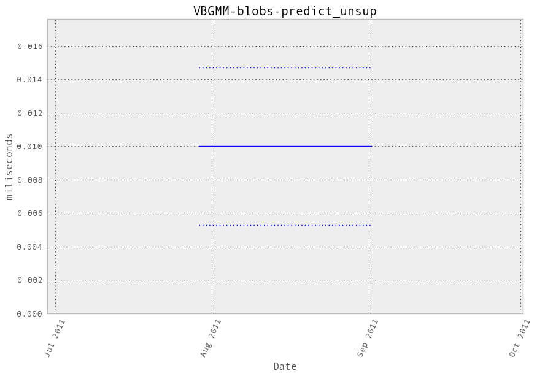Memory usage
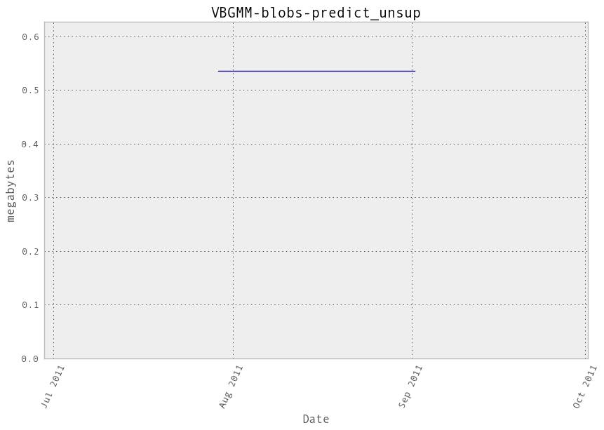Additional output
cProfile
586 function calls in 0.015 seconds
Ordered by: cumulative time
ncalls tottime percall cumtime percall filename:lineno(function)
1 0.000 0.000 0.015 0.015 /hardmnt/goblin1/home/nivlad/balls/vbench/vbench/benchmark.py:257(f)
1 0.000 0.000 0.015 0.015 <f>:1(<module>)
1 0.000 0.000 0.015 0.015 /hardmnt/goblin1/home/nivlad/balls/scikit-learn/sklearn/mixture/gmm.py:353(predict)
1 0.000 0.000 0.015 0.015 /hardmnt/goblin1/home/nivlad/balls/scikit-learn/sklearn/mixture/dpgmm.py:663(eval)
1 0.000 0.000 0.013 0.013 /hardmnt/goblin1/home/nivlad/balls/scikit-learn/sklearn/mixture/dpgmm.py:92(_bound_state_log_lik)
10 0.000 0.000 0.013 0.001 /hardmnt/goblin1/home/nivlad/balls/scikit-learn/sklearn/mixture/dpgmm.py:86(_sym_quad_form)
10 0.001 0.000 0.013 0.001 /home/nivlad/.local/lib/python2.7/site-packages/scipy/spatial/distance.py:1693(cdist)
10 0.010 0.001 0.010 0.001 {scipy.spatial._distance_wrap.cdist_mahalanobis_wrap}
1 0.001 0.001 0.001 0.001 /hardmnt/goblin1/home/nivlad/balls/scikit-learn/sklearn/mixture/dpgmm.py:36(log_normalize)
30 0.000 0.000 0.001 0.000 /home/nivlad/.local/lib/python2.7/site-packages/scipy/spatial/distance.py:132(_copy_arrays_if_base_present)
30 0.000 0.000 0.001 0.000 /home/nivlad/.local/lib/python2.7/site-packages/scipy/spatial/distance.py:120(_copy_array_if_base_present)
30 0.000 0.000 0.001 0.000 /home/nivlad/.local/lib/python2.7/site-packages/numpy/core/numerictypes.py:703(issubsctype)
1 0.001 0.001 0.001 0.001 /hardmnt/goblin1/home/nivlad/balls/scikit-learn/sklearn/utils/extmath.py:210(logsumexp)
60 0.000 0.000 0.001 0.000 /home/nivlad/.local/lib/python2.7/site-packages/numpy/core/numerictypes.py:608(obj2sctype)
31 0.000 0.000 0.000 0.000 /home/nivlad/.local/lib/python2.7/site-packages/numpy/core/numeric.py:167(asarray)
31 0.000 0.000 0.000 0.000 {numpy.core.multiarray.array}
90 0.000 0.000 0.000 0.000 {issubclass}
50 0.000 0.000 0.000 0.000 /home/nivlad/.local/lib/python2.7/site-packages/scipy/spatial/distance.py:151(_convert_to_double)
4 0.000 0.000 0.000 0.000 /home/nivlad/.local/lib/python2.7/site-packages/numpy/core/fromnumeric.py:1379(sum)
104 0.000 0.000 0.000 0.000 {isinstance}
4 0.000 0.000 0.000 0.000 {method 'sum' of 'numpy.ndarray' objects}
2 0.000 0.000 0.000 0.000 {method 'max' of 'numpy.ndarray' objects}
13 0.000 0.000 0.000 0.000 {numpy.core.multiarray.zeros}
2 0.000 0.000 0.000 0.000 /hardmnt/goblin1/home/nivlad/balls/scikit-learn/sklearn/mixture/dpgmm.py:28(digamma)
10 0.000 0.000 0.000 0.000 {method 'reshape' of 'numpy.ndarray' objects}
1 0.000 0.000 0.000 0.000 {method 'argmax' of 'numpy.ndarray' objects}
3 0.000 0.000 0.000 0.000 /home/nivlad/.local/lib/python2.7/site-packages/numpy/core/getlimits.py:91(__new__)
2 0.000 0.000 0.000 0.000 /home/nivlad/.local/lib/python2.7/site-packages/numpy/core/numeric.py:1069(rollaxis)
1 0.000 0.000 0.000 0.000 {method 'copy' of 'numpy.ndarray' objects}
3 0.000 0.000 0.000 0.000 {method 'get' of 'dict' objects}
10 0.000 0.000 0.000 0.000 {method 'lower' of 'str' objects}
20 0.000 0.000 0.000 0.000 {len}
1 0.000 0.000 0.000 0.000 /home/nivlad/.local/lib/python2.7/site-packages/numpy/core/fromnumeric.py:397(swapaxes)
10 0.000 0.000 0.000 0.000 {callable}
1 0.000 0.000 0.000 0.000 {numpy.core.multiarray.empty}
1 0.000 0.000 0.000 0.000 {range}
1 0.000 0.000 0.000 0.000 {method 'swapaxes' of 'numpy.ndarray' objects}
1 0.000 0.000 0.000 0.000 {method 'transpose' of 'numpy.ndarray' objects}
1 0.000 0.000 0.000 0.000 {method 'remove' of 'list' objects}
1 0.000 0.000 0.000 0.000 {method 'insert' of 'list' objects}
1 0.000 0.000 0.000 0.000 {method 'disable' of '_lsprof.Profiler' objects}
.. container::
LineProfiler
Timer unit: 1e-06 s
File: /hardmnt/goblin1/home/nivlad/balls/scikit-learn/sklearn/mixture/gmm.py
Function: predict at line 353
Total time: 0.017001 s
Line # Hits Time Per Hit % Time Line Contents
==============================================================
353 def predict(self, X):
354 """Predict label for data.
355
356 Parameters
357 ----------
358 X : array-like, shape = [n_samples, n_features]
359
360 Returns
361 -------
362 C : array, shape = (n_samples,)
363 """
364 1 16958 16958.0 99.7 logprob, responsibilities = self.eval(X)
365 1 43 43.0 0.3 return responsibilities.argmax(axis=1)